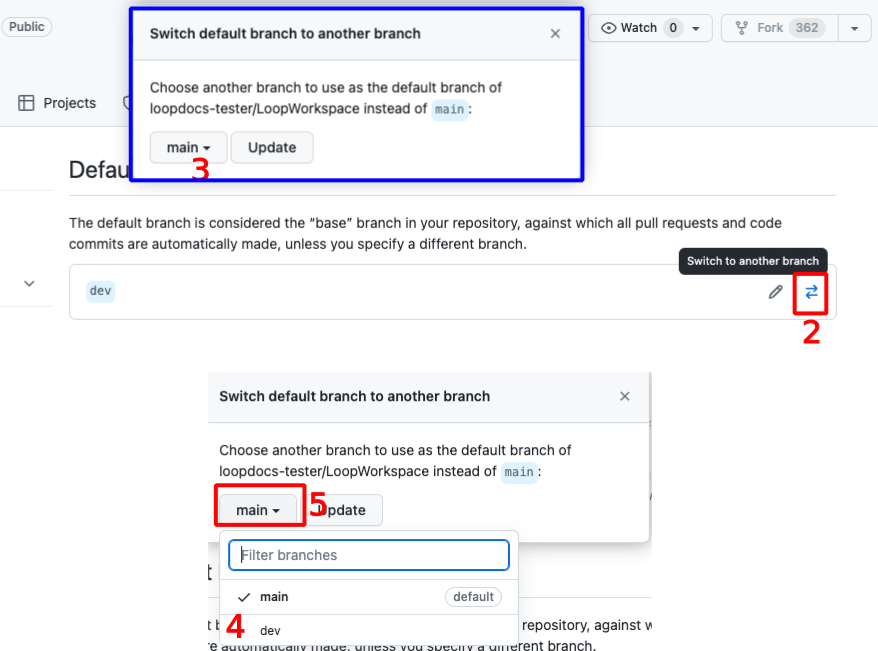

Update/Rebuild with Browser
Overview¶
This page is only relevant when building with a browser.
For Mac-Xcode, please see: Update/Rebuild with Mac-Xcode
Time Estimate (click to open/close)
Build the Loop App
- 5 min: Check Apple account status
- Check if you need to renew certificates (once a year only)
- 5 min: Update version if a new one is available
- 5 min: Start the Build
- Wait for the build to complete and appear in the TestFlight app on your phone
- about an hour
- depends on GitHub, Apple and TestFlight
Once a Year Renew Certificate
- 5 min: Clear out expired certificates
- 5 min: Generate new certificates
Page Summary (click to open/close)
The Loop app must be built at least every 90 days when you build with a browser - this is TestFlight requirement.
Most users will start at How to Update or Rebuild.
If your GitHub Personal Access Token has expired, we recommend you update it with No Expiration as explained at GitHub Token.
If you are running Loop-dev, be sure to review Build Development Version
- You should be following along with zulipchat when using the
dev branch - Summary build updates can be found under the One-Time Changes section
FAQs (click to open/close)
- "What is an update?" Anytime you want to change versions or if your TestFlight build is about to expire, follow the instructions on this page.
- "Do I delete my old Loop app first?" Definitely not! If you keep your Loop app on your phone, your Loop settings (and existing pod) will continue to work the same after the update. Seamless.
- "Do I need to start a new pod when I update?" No. Your existing pod session will continue seamlessly if you are using the same Developer Account as the last time you built.
- "What if I'm using a new/different developer account?" If you aren't building with the same developer account used when your existing app was built, then you will be installing a brand new (second) Loop app on your phone. Your existing pod won't work with the new app, so you might want to time this transition when you are due to change pods. Delete the old app once you get the new one all set up.
- Do I need a computer? No.
- Can I do this on my phone? Yes, especially after you update your GitHub token to
No Expiration. - Did the directions change? Yes. We now recommend you select a GitHub Personal Access Token that never expires and supports automatic update and rebuild when that feature is released. It simplifies the build every 90-day process significantly.
- How do I set my GitHub
Personal Access Tokento never expire and to support the automatic rebuild feature? See this section Regenerate Token. - What happens to my existing builds when I change my GitHub Personal Access Token? Nothing. The
GH_PATonly affect future builds. Previous build are available for the full 90 days. - Is there anything I have to do once a year? Yes. Once a year you need to get a new
Distribution Certificate. These only last one year. See this section Renew Certificate
When to Update or Rebuild¶
Under ordinary circumstances, you do not have to rebuild or update your Loop app until TestFlight forces you to (90 days). However, there is no harm in building more frequently.
- You control when the new app is installed on your phone, refer to: Install on Phone: Disable Automatic Install from TestFlight
- You always want a build available in the TestFlight app
- You can use TestFlight to quickly install the app if you loose or break your phone and need to replace it
- You can use TestFlight to quickly install the app if someone accidentally deletes the app from your phone
How to Update or Rebuild¶
Summary of Update Steps
- Accept Agreements
- Renew Certificate (once a year)
- Update
Fork - Build the Loop App
- Wait for TestFlight
- Install or Confirm Installation
Ignore the email that says you need to fix "issues" in your app. You are not selling the app in the app store; so no action is required. The app you built is for personal use for you or a family member.
Accept Agreements¶
Sign in to your Apple Developer account. If there are agreements you have not accepted, you will get errors when you try to Build that indicate your Apple Secrets are incorrect - that is very unlikely. You may also need to update your credit card information if it has changed, for example, if there is a new expiration date.
- For an update, you do not need to modify the
FASTLANE_ISSUER_ID,FASTLANE_KEY_IDorFASTLANE_KEY - Check your Apple Developer account for agreements, then continue
If you need detailed instructions, click on this Apple Program License Agreement Help Page.
- Accept the
Apple Program License Agreement(only)- You do NOT need to accept anything related to the
Paid Applications Schedule Agreement - That is only required when you sell an app through the
App Store
- You do NOT need to accept anything related to the
Wait After You Agree
It typically takes 15 minutes before your updated agreement is available so you can complete your build.
If your build with browser fails, wait longer. An hour wait was reported by one person.
Renew Certificate¶
Once a year, you need to renew your Distribution Certificate to continue using the build with browser method.
Note that these steps should become more automated, but for now, here's what you need to do when you get an email from Apple informing you that "Your
Distribution Certificatewill no longer be valid in 30 days."
Apps in TestFlight that have not already expired are not affected by revoking the certificate.
- Apps installed on the phone continue to run
- Apps can be installed from TestFlight onto a phone up through the TestFlight expiration date
- You just cannot build a new app until a new Certificate is generated
Do you want to know more? (Click to open/close)
-
Delete all your
Distribution Certificates. Apple only allows you to have 2 of these. So get rid of the old ones so you will be able to create a new one that will last a full year. (Step 1 below.) -
The Certificate in question is embedded in your
Match-Secrets repository. In order to proceed, you need to remove the old certificate fromMatch-Secrets. Later this will be automated and can be done without deleting yourMatch-Secrets repository, but for now the easiest way to do that is to just delete your currentMatch-Secrets repositoryand then create a brand new one. (Steps 2 and 3 below.) -
Finally, for every app that you build with this method, you need to run
Create Certificatesfor that app. (Step 4 below.)
Manual Steps to Renew Your Distribution Certificate¶
- Use this link to view your Apple Developer Certificates
- Carefully examine the
Typecolumn - do not delete aDevelopment Certificate - Click each row that has a
Distribution Certificateand revoke it - You will get an email informing you the certificate was revoked
- Carefully examine the
- Delete your
Match-SecretsRepository- Instructions to delete a repository are found at GitHub Docs
- Create a new private
Match-SecretsRepository- main branch: follow the directions First-Time: Create
Match-Secrets - dev branch:
Create Certificatesautomatically creates a new privateMatch-Secretsrepository if you don't have one- Optional: you can skip step 3 and instead, select
devbranch forCreate Certificates
- main branch: follow the directions First-Time: Create
- In your fork of LoopWorkspace:
- Run the
Action:Create Certificates
- Run the
Other Apps
If you build other apps using the build with browser method, they have just had their certificates revoked.
- The existing apps you installed from TestFlight continue working until their TestFlight expiration date
- You cannot build new versions of the app until you run
Create Certificatesfor that app - To make sure you don't forget, go ahead and do that for all your other
repositoriesnow
Update Fork¶
Open your GitHub account and select your LoopWorkspace repository from your repositories list.

- If your
forkis up to date with LoopKit version, you will see the messageThis branch is up to date with LoopKit/LoopWorkspace:{branch}- there is no need to build again unless your Loop app in TestFlight is about to expire - in which case, proceed to Build the Loop App - If your
forkshows a message such asThis branch is 3 commits behind LoopKit:mainand you want to update and build, then clickSync Forkby tapping where the red rectangle is shown in the graphic above, then in the pop-up window, tap onUpdate branch - If your
forkshows a message such asThis branch is 3 commits behind LoopKit:main and 4 commits ahead of LoopKit:main; you might need to manually sync and choose todiscard changes; you can always customize again after the update
Building a different branch
Do I need to do anything special to build a different branch?
Yes: please follow instructions at Build Development Version
Build the Loop App¶
Refer to graphic below as you follow the steps to build the Loop app.
- Click on the
Actionstab - Select the
4. Build Loopworkflow on the left- If using a mobile browser, be sure to use landscape mode to more closely match how GitHub looks on a computer.
- Look on the right and click
Run workflowto see the dropdown - Click on the green
Run workflowbutton in the dropdown - Wait ~25 min for the build to complete successfully
- It is then processed by Apple and sent to TestFlight (be patient)

What if the Build Fails¶
If a new release is announced at Current Release, look to see if there are instructions about extra steps required with the release. (The release after 3.2.3 will certainly have extra instructions.)
If you are using the dev branch, head over to Build Development Version for information.
Otherwise, head over to Errors with Browser.
Apple Email to Ignore¶
- You can ignore an email from Apple that there are things you must fix in your app - that refers to things to fix before putting that app in the App Store and you will not be doing that
Wait for TestFlight¶
You'll receive an App Store Connect email confirming that the build has completed processing, and a TestFlight email confirming the new app is ready to test.
- If you get an email that the action failed, then return to your repository and look for Build Action error messages
- Click on the most recent Build job with the red x by it
- If the details show this message,
Could not install WWDR certificate- This means Apple did not reply to GitHub as fast as GitHub expected
- Make sure your developer account is in good standing and that there are no agreements that need to be accepted
- Repeat the build (previous step)
The updated Loop app will show up in your TestFlight app on the Looper's phone.
- Your new app will have "Expires in 90 days"
- There may be older builds that are still in TestFlight
- It takes time for the update to show up in the TestFlight app
- You will also see a build number in parentheses, that number increments each build - don't worry about the number
Calendar Reminder
This is a good time to put a calendar reminder in your favorite app.
Set it up for a few days before the TestFlight app will expire.
Install or Confirm Installation¶
Automatic Update Disabled¶
Option 1: If you chose to Disable Automatic Install from TestFlight, you control when to install the app on the phone.
- This is the recommended option
- Open TestFlight on your phone and click
Installas shown in the GIF below - If you are building for a child, follow the TestFlight for a Child instructions again

Automatic Update Enabled¶
We strongly recommend you toggle off Automatic Updates to allow you to be in full control over when the app is updated. This is even more important if you're using automatic builds from GitHub for version 3.3 or later.
Option 2: If you chose to enable Automatic Updates from TestFlight for the Loop app, the updated build will be installed over your existing app as soon as it uploaded to TestFlight.
- In this case, when you look at the TestFlight app on your phone, the app should have installed automatically
- Refer to the GIF above, the message will say
Openinstead ofInstall
Choose Previous Build¶
If you are a typical user who just builds a single version for yourself or your child, you do not need to read this section.
This section provides detailed instructions if you want to choose a previous build to install on your phone. Typically, the most recent build is selected but there may be special cases:
- You are supporting multiple family members and may build different versions for each
- You want to test a different
branchor set of customizations; you can install a previous build once you are done with the test
This section covers two topics.
- Optional: Add Test Details to the TestFlight build
- Select a Previous Build
Add Test Details¶
About half an hour after the build action completes, the new build will appear in the TestFlight screen at this link: App Store Connect / Apps
- Log in if needed
- Select your Loop app
- Click on the
TestFlighttab to see a screen similar to the graphic below
Select the build to which you wish to add testing notes. When you tap on that icon, it opens a screen similar to that in the next graphic.

Click inside the box under Test Details. Insert the text you want to see on the phone before you install this version of the app. Tap the Save button at upper right and then < iOS Builds at upper left.
In this example, the branch and commit number are included followed by an indication that this version includes the customizations preferred by this person. Your test details can be as simple as "Use this for Charlie".
Commit Number
If your build includes customizations, your commit number will not match what the developer expects to see if you need to ask for help.
Use this section Customization and SHA-1 to determine the SHA-1 before customization.
Select a Previous Build¶
First open the TestFlight app on your phone and select the Loop app.
Near the bottom of the screen is a row labeled previous builds.
- Tap on the previous builds row
- The available builds are grouped by app version number, choose your desired version
- Typically you choose the most recent build for that version and click Install and then Open after installation completes
- All your settings should remain
The following graphic shows the view seen in the TestFlight app on the phone. By adding test details (as explained in the previous section), the desired build is clear. For most people - they will just use the most recent build. This procedure is useful for those who build often or who support multiple family members.
The Loop App Build Details¶
In the Loop app, once installed on your phone, tap on Settings -> Support -> Issue Report. The graphic below shows an example of the Build Details included in the report.
- The
profileExpirationlisted here is irrelevant - the app expires when the TestFlight expiration indicates- Pro Tip: Add a calender reminder for your next build
- An app built with a browser displays a
sourceRootthat starts with/Users/runner/work/LoopWorkspace- The
buildDateStringis when the app was built and transferred to TestFlight, not when it was installed on your phone - You can use 90 days from this date, as well as the Expires in ## Days on the TestFlight app, to know when you need to rebuild
- The

GitHub Token¶
Your GitHub Personal Access Token should be configured:
Never expirerepo, workflowpermission scope
If you are not logged in to GitHub and have not logged in recently, then you may see the authentication screen when doing the steps below.
Authenticate if requested by clicking on the green Send SMS button or entering your password.

Once you are authenticated, you will have access to view your personal access token.
Modify Personal Access Token¶
If your Personal Access Token has not expired but does not have the correct permission, you should modify it. Do not regenerate it.
Click on the link to view your token and compare it to the graphic below.
The graphic above has a blue rectangle added to indicate where you should see your token. If yours does not look like this, click on the link (FastLane Access Token) to open a new display. Watch the GIF below - there are 4 frames, the last one has the Update token button.
- Click on the link (
FastLane Access Token) to open a new display - This example has no workflow or repo checks in it
- Add a check to the workflow box
- Scroll all the way to the bottom of the screen and click on the green
Update tokenbutton
After you click on the Update token button, your FastLane Access Token should now show repo, workflow and look like the earlier graphic above.
The only reason to regenerate a token is if it is set to expire. Do not do the next section unless you have to.
Regenerate Token¶
If your Personal Access Token has expired or has an expiration date, you can regenerate the new one at any time.
Update new GH_PAT to Secrets
After you get your new token, immediately add it to your Secrets for any app you build with this method. You don't have to rebuild the app, but it's a good idea to at least run Action 1. Validate Secrets for each repository to make sure you did not make a mistake.
You can regenerate your GitHub Personal Access Token at any time by clicking on the link below. (Right-click, control-click to open in a new browser tab.)
The FastLane Access Token is a clickable link.

After you click on FastLane Access Token your screen should be similar to the graphic below.
Your existing TestFlight builds are fine
The yellow GitHub warning by the Regenerate Token button is for new builds you make in the future.
Previous builds are still available in TestFlight and are not affected by this action.
Note - selecting the workflow check box below is new. If yours does not show that selection, add it before you click on Regenerate token (red highlight in graphic below).

Click on Regenerate token (red highlight in previous graphic) to see screen similar to next graphic.
- Most Loopers will have classic personal access tokens
- If you are a developer who needs to use the fine-grained (by repository) option, that's fine
Be sure to change the Expiration from 30 days to No Expiration. When you select No Expiration a GitHub warning appears. Click on the green Regenerate Token button (red highlight in following graphic).
The next screen shows your new token. Copy the token using the copy icon and save it along with your other secret settings.

The next step is to update GH_PAT in your Secrets. (If you build other apps with this method - update the GH_PAT for all of them right now - do not forget.)
Update Secrets¶
This example is for updating GH_PAT in the Secrets for your repository, but the same method can be applied when changing any of the Secrets.
Open the repository for which you will update Secrets. On the far right is a Settings selection. If you don't see Settings (if last item on row is Insights), then you are not on your fork or you need to sign in to your GitHub account. You should see username/LoopWorkspace with forked from LoopKit/LoopWorkspace underneath.
Refer to the GIF for help. There are 3 frames.

- Tap on Settings, then scroll down until you see
Secrets and variableson the left side and click on the drop down indicator to displayActions. - Keep scrolling on the same screen, past the
Action secrets / New repository secretrow, until you see the list of your currentSecrets. - Click on the GH_PAT, tap on the pencil and enter the new token in the form. Click on Update Secret to complete the action.
Scroll all the way to the top of the screen and tap on your LoopWorkspace link. Then follow the How to Update or Rebuild instructions to start a new build.
Build Development Version¶
You can build any desired branch (available at LoopKit/LoopWorkspace) using the GitHub Browser build method. This section is suitable if you have already built either dev or main branch using the GitHub First-Time instructions.
No matter the method used to build Loop for any branch other than main, you are testing development code. Please read this link now before continuing.
The graphics show the dev branch. If you want a different branch, just substitute that branch name for dev.
Overview of what you will do
- Your
LoopWorkspace forkmust have thebranchyou want- You will either add it or make sure it is up to date
- You cannot just rename your existing branch to dev - you must get the dev branch from LoopKit
- When you select the action
4. Build Loopand then click on theRun Workflowdropdown, you must selectdevthere before clicking the greenRun workflowbutton - see BuildBranch
Check Current Branch¶
Your LoopWorkspace fork is at https://github.com/username/LoopWorkspace where you substitute your actual GitHub username. You need to be logged into GitHub. Review the graphic below as you go through the steps.
- Click on the
branchicon to display thebranchesas shown in the lower half of the graphic below:- If the
branchyou want is not listed, then continue with Step 2 - Otherwise, skip ahead to Update
Branch
- If the
- Click on the
New branchbutton and follow the AddBranchsteps
Add Branch¶
Each step in the list below matches with the number in the graphic. In the top half of the graphic, the left side shows the initial display and the right side shows the display after making the indicated selections:
- Click on the drop down menu labeled 1 in the graphic and choose LoopKit/LoopWorkspace as show in the top right graphic
- Click on the drop down menu labeled 2 in the graphic and choose dev
- Click on the
Branchname box labeled 3 in the graphic and type dev- The branch name in your
forkshould always match the branch name you are adding; check that you type it correctly
- The branch name in your
- Review the dialog items to make sure everything is correct and then tap on Create branch
Update Branch¶
Tap the Code button (upper left) and ensure this branch in your fork is up to date.
- Select the desired branch in the dropdown menu (this graphic shows dev branch)
- If the message indicates this branch is "behind", tap on the sync
forkbutton and then the Update branch button
One-Time Changes¶
Look in this section for one-time changes for building dev with a browser that require special, one-time actions.
If you have already completed the One-Time Changes, skip ahead to Build Branch.
Transition to dev¶
When updating from Loop 3.2.x to dev, you will need to take some extra steps.
You have a choice:
- You can change your default branch to dev, see Change Default
Branchand then your Loop app will be automatically updated and automatically built at least once a month- Be sure to review the Modify Automatic Building section
- You can leave your default branch at main, but no automated updates will happen
- Running each action below requires you to select the dev branch in the drop-down menu
Here is a summary of the extra steps; each step has an associated link. This assumes you have already updated your fork and are at the correct branch.
- Confirm the status of your GitHub Personal Access Token
- It should be configured with permission scope of
repo, workflowand to never expire - You can check this using directions at GitHub Token
- It should be configured with permission scope of
- Next, follow along in this section to perform these steps before you build
- Add and Update
New Indentifier Create Certificates
- Add and Update
Automatic Creation of alive branch¶
What about the alive branch
- Sometimes you get an error about the
alive branch - It should be created for you automatically if you are building with the
dev branchand you haveworkflowpermission added to thescopefor your GitHubPersonal Access Token - Try one more time and if it still fails, you can Create the
alive branchManually
Add and Update New Identifier¶
The bundle ID for the "widget" changed from "SmallStatusWidget" to the more descriptive "LoopWidgetExtension".
- You need to run Add Identifier - be sure that you run this for the dev branch
- Wait for it to succeed
- Add the
App Groupto this one new Identifier
All other identifiers should be already set up. If they are not, please go through the steps on the Configure to Use Browser page to figure out what you are missing.
NAME |
IDENTIFIER |
|---|---|
Loop Widget Extension |
com.TEAMID.loopkit.Loop.LoopWidgetExtension |
- Open the Certificates, Identifiers & Profiles: Identifiers List page.
- Click on the "
LoopWidgetExtension" identifier - Edit the App Group to include
group.com.TEAMID.loopkit.LoopGroupwhere you use yourTEAMID
Create Certificates and Build¶
You must create certificates again to cover the new Identifier name and to provide support for the addition of the Libre sensors. (This step is required whether you use Libre or not - Loop needs permission to have that capability). Once the certificate action succeeds, then run the action to build Loop.
- Run the Action for Create Certificates - be sure that you run this for the dev branch
- Run the Action for
Build Loop(see BuildBranch)
Build Branch¶
If you want a branch to be the one you build all the time, you may choose to Change Default Branch. This is not necessary except for special cases.
If you have one branch as default, for example main, and choose to build a different branch, there is an extra step when you Build Loop. Refer to step 4 in the graphic below. Use the branch dropdown menu to select the branch you want before hitting the green Run workflow button.

!!!
Change Default Branch¶
There can be several reasons why you would change your default branch.
- It can be convenient to have the branch you build most be configured as the default branch
- The branch you want to build has a different workflow than your default branch (not typical)
- In this case, you must modify the default branch
- Check the zulipchat conversation about the branch you are testing to see if it is necessary to make it default
These are the steps to modify the default branch.
For this example, we show how to change from a default branch of main to a default branch of dev. Note - only the owner of the repository can take this action and they must be logged in. Otherwise the Settings tab does not appear.
For the numbered steps below, refer to the graphic found under each group of steps.
-
Click on the Settings Icon near the top right of your LoopWorkspace
- You may need to scroll down to see the
Default Branchas shown in the graphic - Do not tap on the Branches tab to the left under Code and Automation, that is not the correct menu

- You may need to scroll down to see the
-
To the right of the default branch name there is a pencil and a left-right arrow icon
- Tap on the left-right arrow icon to bring up the
Switch default branch to another branchdialog
- Tap on the left-right arrow icon to bring up the
- Click on the dropdown next to the current default branch, in this example,
main - Select the desired default branch, in this example,
dev -
Click on the
Updatebutton
-
You will be presented with an are-you-sure question.
- Click on the red
I understand, update the default branch.button
- Click on the red
Your default branch has been changed.
Modify Automatic Building¶
For someone using development code for their own use, they probably want to decide when to update their fork to the most recent commit. They can still have the advantage of automatic building without automatic updates. There may be other configurations someone would choose. These options are added to Loop 3.3.0 and later.
You can affect the default behavior:
Modify Automatic Schedule¶
You can modify the automation by creating and using some variables.
To configure the automated build more granularly involves creating up to two environment variables: SCHEDULED_BUILD and/or SCHEDULED_SYNC. See How to configure a variable.
Note that the weekly and monthly Build Loop actions will continue, but the actions are modified if one or more of these variables is set to false. A successful Action Log will still appear, even if no automatic activity happens.
- If you want to manually decide when to update your repository to the latest commit, but you want the monthly builds and keep-alive to continue: set
SCHEDULED_SYNCto false and either do not createSCHEDULED_BUILDor set it to true - If you want to only build when an update has been found: set
SCHEDULED_BUILDto false and either do not createSCHEDULED_SYNCor set it to true- Warning: if no updates to your default branch are detected within 90 days, your previous TestFlight build may expire requiring a manual build
SCHEDULED _SYNC |
SCHEDULED _BUILD |
Automatic Actions |
|---|---|---|
true (or NA) |
true (or NA) |
keep-alive, weekly update check (auto update/build), monthly build with auto update |
true (or NA) |
false |
keep-alive, weekly update check with auto update, only builds if update detected |
false |
true (or NA) |
keep-alive, monthly build, no auto update |
false |
false |
no automatic activity, no keep-alive |
How to configure a variable¶
- Go to the "Settings" tab of your LoopWorkspace repository.
- Click on
Secrets and Variables. - Click on
Actions - You will now see a page titled Actions secrets and variables. Click on the
Variablestab - To disable ONLY scheduled building, do the following:
- Click on the green
New repository variablebutton (upper right) - Type
SCHEDULED_BUILDin the "Name" field - Type
falsein the "Value" field - Click the green
Add variablebutton to save.
- Click on the green
- To disable scheduled syncing, add a variable:
- Click on the green
New repository variablebutton (upper right) -
- Type
SCHEDULED_SYNCin the "Name" field
- Type
- Type
falsein the "Value" field - Click the green
Add variablebutton to save
- Click on the green
Your build will run on the following conditions:
- Default behaviour:
- Run weekly, every Wednesday at 08:00 UTC to check for changes; if there are changes, it will update your repository and build
- Run monthly, every first of the month at 06:00 UTC, if there are changes, it will update your repository; regardless of changes, it will build
- Each time the action runs, it makes a keep-alive commit to the
alivebranch if necessary
- If you disable any automation (both variables set to
false), no updates, keep-alive or building happens whenBuild Loopruns - If you disabled just scheduled synchronization (
SCHEDULED_SYNCset tofalse), it will only run once a month, on the first of the month, no update will happen; keep-alive will run - If you disabled just scheduled build (
SCHEDULED_BUILDset tofalse), it will run once weekly, every Wednesday, to check for changes; if there are changes, it will update and build; keep-alive will run
Disable Automatic Actions¶
To enable the scheduled build and sync, the GH_PAT must hold the workflow permission scopes. This permission serves as the enabler for automatic and scheduled builds with browser build. To disable this, follow these steps:
- Go to your FastLane Access Token
- If it says
repo,workflownext to theFastLane Access Tokenlink, then automatic building is enabled - To disable automatic update and build, click on the link to open the token detail view
- Click to uncheck the
workflowbox - Click to check the
repobox
- Click to uncheck the
- Scroll all the way down to and click the green
Update tokenbutton - Your token now holds only the
repopermission
If you choose not to have automatic building enabled, be sure the GH_PAT has repo scope or you won't be able to manually build.
Stop Building¶
What if I decide I don't want the automatic building feature?
-
If you are using the released version of Loop, please leave automatic building running
- Please read TestFlight Automatic Updates on how to configure TestFlight so you choose when the updated app gets installed on your phone
- Otherwise, you may see the dreaded "Loop Beta has expired" message, have a Loop that won't open and not have a version ready to go in TestFlight that you can install within a few seconds
-
If you are taking a break from Loop and want to stop monthly Build emails, consider disabling actions for the
Build Loopaction for your app.- GitHub Directions to Disable and Enable a Workflow
- It is the Build action that kicks off the update and build steps, so simply disabling the one action is sufficient
-
If you are done with Loop, you can delete the whole repository; but you should be sure about this because you'll need to start over with Configure to Use Browser to restore ability to build Loop with GitHub.
Historical Interest Only¶
Historical One-Time Changes¶
You don't need this - it is left for historical reasons for people who have been following along with dev.
26-July-2023
The bundle ID for the "widget" changed from "SmallStatusWidget" to the more descriptive "LoopWidgetExtension".
The table in LoopDocs (for main) will be updated after the next release.
For those using dev, you must follow these one-time steps:
- Sync your
forkto latest version of dev - Run the Action for Add Identifiers (this adds "
LoopWidgetExtension" to identifiers)- Open the Certificates, Identifiers & Profiles: Identifiers List page.
- Click on the "
LoopWidgetExtension" identifier - Edit the App Group to include
group.com.TEAMID.loopkit.LoopGroupwhere you use yourTEAMID
- Run the Action for Create Certificates
- Run the Action for
Build Loop
03-July-2023
- Libre support was added to dev (03 July 2023) using the LibreTransmitter code
- This requires (one-time) that the
Actionsfor2. Add Identifiersand3. Create Certificatesbe run before attempting4. Build Loop - The LibreTransmitter code requires
Near Field Communicationand doing these steps automatically adds the required capability
- This requires (one-time) that the
- Automatic update and automatic monthly build was added to dev (13 July 2023)
- Once a month, GitHub will attempt to update and build Loop from your
default branchusing the instructions in theAction: 4. Build Loop(build_loop.ymlfile) and send the new app to TestFlight - As part of this monthly build, GitHub will check to see if updates are required for your
default branch - When updates are not required, it just builds the app
- When updates are required:
- If it can figure out how to do the
syncautomatically, it does so - If it cannot figure out how to do the
syncautomatically, theActionto4. Build Loopwill fail and you will need to take manual steps
- If it can figure out how to do the
- You will get an email that the
Buildeither succeeded or failed
- Once a month, GitHub will attempt to update and build Loop from your
Automatic Update Requirements
To enable the automatic update and rebuild, two steps are required. These are one-time steps.
- The GH_PAT must be updated (not regenerated) to add
workflow- Examine your
FastLane Access Token - If it says
repo, workflow, then no further action is needed for your GH_PAT - If it say
repoonly, then click on theFastLane Access Tokenlink, click to add a check to theworkflowbox and scroll all the way down to select the greenUpdate tokenbutton
- Examine your
- A new branch called
alivemust be created from the LoopKitdevbranch- This is now created automatically for you
Create the alive branch Manually¶
The alive branch will receive some additional commits to its history. This is part of automating the process. The alive branch is not used for building the app. You do not need to interact with it. Make sure you don't already have an alive branch. If you do and you are getting errors, then delete the alive branch and try again.
- Go to the
Codetab of yourrepository - Click the
branchicon dropdown button, and then View all branches - Click the green
New branchbutton (upper right) - Type
alivein theNew branch namefield - Select
LoopKit/LoopWorkspaceasSource - Select
devin thebranchdropdown. - Click the green
Create new branchbutton